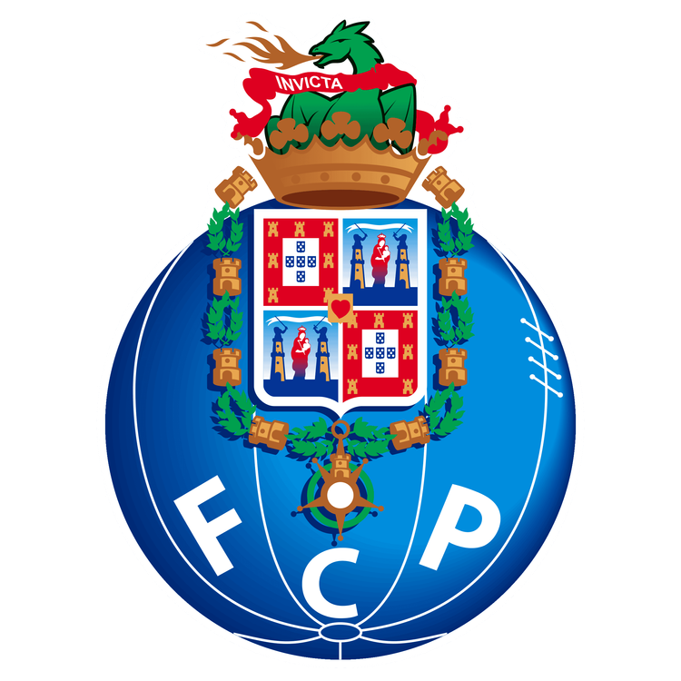
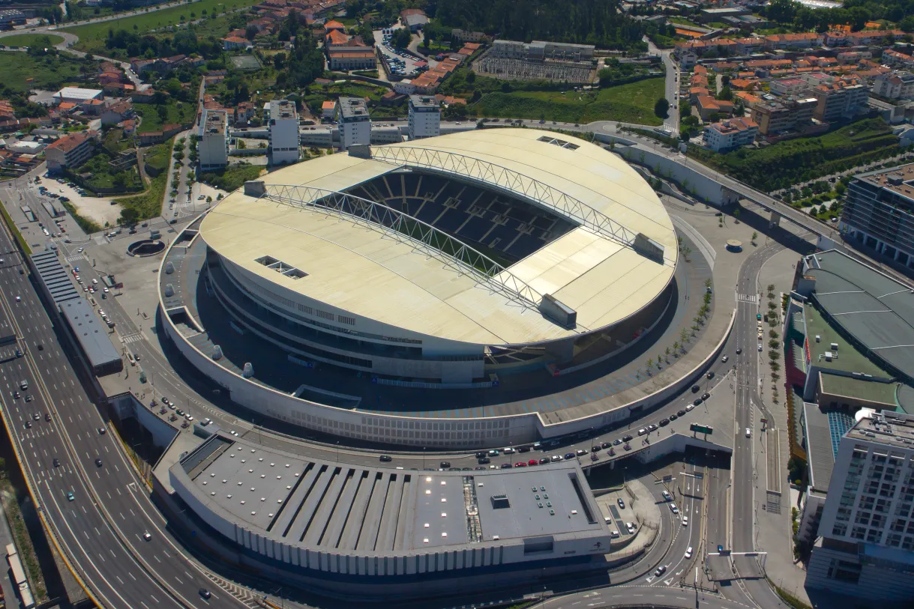

Treinador: Francesco Farioli
Francesco Farioli é um treinador de futebol italiano, atualmente ao comando do FC Porto, que se destaca por uma trajetória invulgar e uma abordagem profundamente intelectual ao jogo. Frequentemente apelidado de "treinador-filósofo", Farioli licenciou-se em Filosofia e escreveu uma tese sobre a estética do futebol e o papel do guarda-redes.
Estádio: Dragão
O Estádio do Dragão ergue-se como um baluarte da ambição portista e do orgulho da Invicta, pautado por uma mística europeia arrebatadora e uma harmonia arquitetónica que abraça a cidade, afirmando-se como um recinto de perfil majestoso, intimidante e glorioso.

Estilo de Jogo:
Francesco Farioli implementou no FC Porto um estilo de jogo pautado pelo jogo de posição, controlo através da posse de bola e uma organização defensiva rigorosa.
"Seguimos Juntos!"